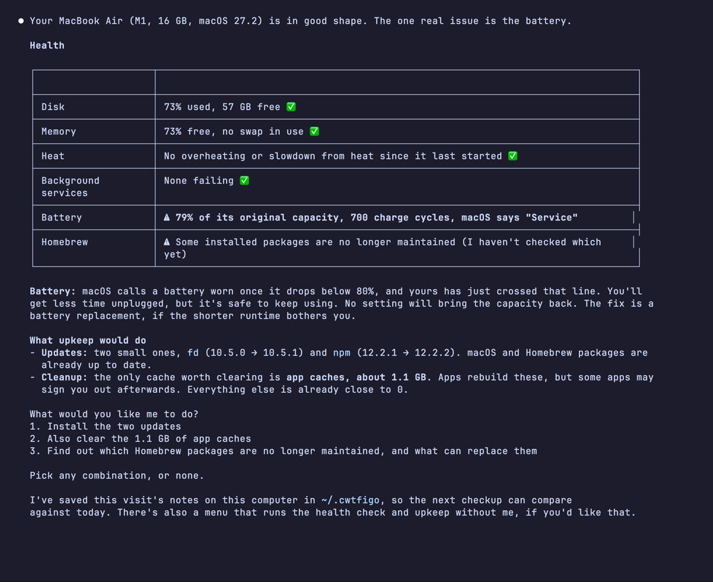
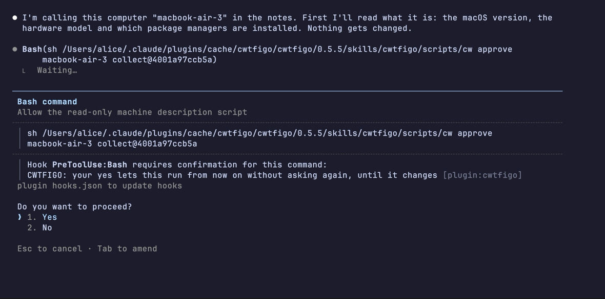
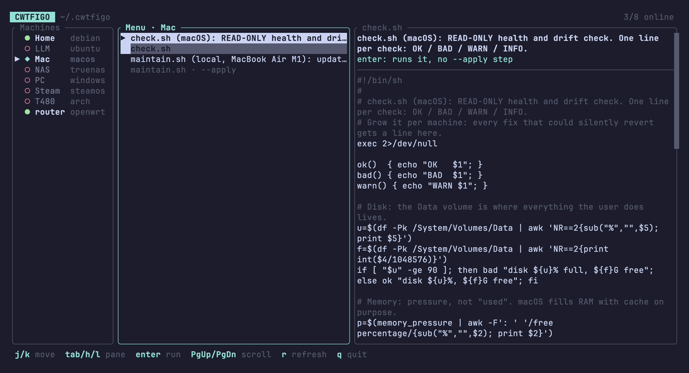

Claude, what the fuck is going on?
Call Claude by name. It finds what’s wrong, fixes it on your OK, and remembers.
/plugin marketplace add DozenTwelve/CWTFIGO /plugin install cwtfigo@cwtfigoThe second line opens a panel that shows the plugin: choose Install for you (user scope) there. Then type cwtfigo. If it offers you a checkup of this computer, it’s working; if not, run /reload-plugins (or restart Claude Code) and type it again.
How it works
Say its name
Type “CWTFIGO” and what’s wrong. Or just “cwtfigo”, and it offers a checkup.


It asks first
One yes covers the plugin’s own read-only checks. Each script Claude writes for your machine asks before its first run, and again if it changes. A script that changes your computer comes in two steps: one that only shows what it would do, and one that does it, which asks every time.


It remembers
Notes stay on your computer, one folder per machine, including others it reaches over SSH. The next visit starts there.
$ ls ~/.cwtfigo/hosts
macbook nas router steam-deck
$ cat ~/.cwtfigo/hosts/nas/notes.md
Debian file server. Backups only.
## Don't touch
- /srv/backup/.old: looks like junk,
holds the 2024 photos
## Parked
- 2026-11-02 Backup disk keeps waking up
- tried: hdparm -S 120: no change
- recheck: when the new enclosure arrivesNo AI needed afterwards
Claude writes each machine its own checkup and upkeep. A small menu runs them without Claude, on Mac and Linux.


Questions
What do I need?
Claude Code, git and python3, which it uses to search past fixes. On a Mac, get git with xcode-select --install. On Windows, install Git for Windows: CWTFIGO’s own scripts, and the check that asks you before changes, run in its Git Bash. Claude Code works without Git Bash; CWTFIGO doesn’t. Most Linux has python3 already; on a minimal install, sudo apt install python3 or sudo dnf install python3. The first visit goes best on Opus: /model opus.
How do I update it?
Claude Code doesn’t update this plugin by itself: it does that only for Anthropic’s own marketplaces. To update now, run /plugin, open the Marketplaces tab, pick cwtfigo, choose Update marketplace, then run /reload-plugins. Choose Enable auto-update in the same place to have it done each time Claude Code starts.
How do I uninstall it?
In Claude Code, /plugin marketplace remove cwtfigo uninstalls the plugin with its marketplace. In a terminal, rm -rf ~/.local/bin/cwtfigo ~/.cache/cwtfigo-visit deletes the menu and the small markers it keeps of past visits. Then take out the PATH line if you added it for the menu, and Hermes as HERMES.md says if you set it up. Your notes stay in ~/.cwtfigo: delete that folder only if you want them gone for good.
Which computers does it work on?
Macs, Linux, Windows, Steam Deck and routers: the one in front of you, or others on your network over SSH. Your laptop can look after your server, your NAS and your router, with the notes for all of them in one place. A machine’s checkup and upkeep start from a ready-made script on macOS, Windows, Arch, Debian and its relatives (Ubuntu, Mint, Pop!_OS, Raspberry Pi OS and a few more) and OpenWrt routers. Other systems, like Fedora or the Steam Deck, work too: Claude writes their scripts from less.
Why not just ask Claude?
Without notes, every chat starts from zero: what this machine is, what you tried last month. CWTFIGO remembers. Each machine also gets its own health check and upkeep script, written by Claude for that machine and approved by you, then rerun every visit and rewritten when something new is learned.
Can I use it without AI?
Yes, on Mac and Linux. A small menu in your terminal runs the scripts Claude has written, machine by machine, so on day one it’s empty and it fills as you use CWTFIGO. One you haven’t approved yet is marked unapproved: it shows you the script and asks before it runs. In Claude Code, say “CWTFIGO install the TUI”, then type cwtfigo in a terminal.
Where do my notes go?
Into ~/.cwtfigo, a git folder on your computer. Delete it and they’re gone. Several computers can share them through a private git remote you own, never a public one.
What does Claude see?
What it reads (names, paths, ports, log lines) passes through Anthropic, like anything else you show Claude Code. For a cleanup it measures sizes, never what’s in your files.
Will it touch things I didn’t ask about?
It only starts when you call it by name. Describe a problem without the name and you get a normal Claude answer. It never touches a machine you didn’t point it at.
Something went wrong?
Tell it “CWTFIGO, that didn’t work”, or “CWTFIGO, open an issue about this”. It drafts a bug report with the version and what happened, shows it to you, and posts it under your GitHub account only on your yes. Posting needs GitHub’s gh tool, installed and logged in (gh auth login). Or open one yourself. Security problems: see SECURITY.md.
Does it make Claude smarter?
No, and it won’t make it dumber either. It depends a lot on the model. Parking problems, showing evidence and dry-run-first scripts come from the skill’s rules, not code, so they rely on the model following them. For a one-time fix on a friend’s laptop, plain Claude Code is fine. For machines you look after every week, it gets better the longer you use it.